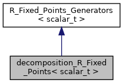
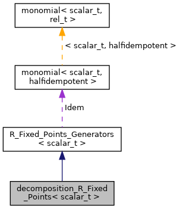
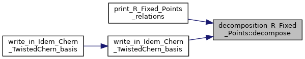
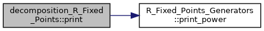
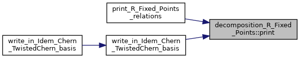
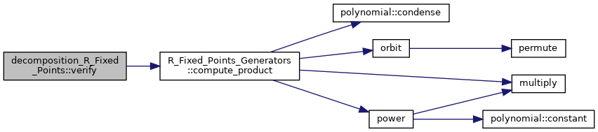
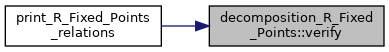

decomposition_R_Fixed_Points< scalar_t > Struct Template Reference
Class for writing every element in the fixed points of R as a polynomial on the generators Idem, Chern and TwistedChern (a "decomposition") More...
#include <Half_Idempotent.h>
Inheritance diagram for decomposition_R_Fixed_Points< scalar_t >:

Collaboration diagram for decomposition_R_Fixed_Points< scalar_t >:

Public Member Functions | |
| decomposition_R_Fixed_Points (int n) | |
| Constructor given number of variables n. More... | |
| void | decompose (const polynomial< scalar_t, halfidempotent > &a) |
| Writes a fixed point of of R (polynomial in x_1,...,x_n,y_1,...,y_n) as a polynomial on the generators Idem, Chern and TwistedChern. More... | |
| std::string | print () |
| Print a polynomial on the generators. More... | |
| bool | verify (const polynomial< scalar_t, halfidempotent > &a) const |
| Verifies that the decomposition is correct (i.e. gives the original polynomial in the original variables). More... | |
 Public Member Functions inherited from R_Fixed_Points_Generators< scalar_t > Public Member Functions inherited from R_Fixed_Points_Generators< scalar_t > | |
| R_Fixed_Points_Generators (int n) | |
| Constructs the generators, given the number of variables n. More... | |
| std::string | print_power (const std::vector< int > &pwr) const |
| Prints a polynomial on our generators Idem, Chern, TwistedChern. More... | |
| polynomial< scalar_t, halfidempotent > | compute_product (const std::vector< int > &pwr) const |
| Computes a product of a monomial on our generators Idem, Chern, TwistedChern. More... | |
| monomial< scalar_t, halfidempotent > | compute_product_max_term (const std::vector< int > &pwr) const |
| Computes the dominant term of a product of a monomial on our generators Idem, Chern, TwistedChern. More... | |
Public Attributes | |
| std::vector< scalar_t > | coeffs |
| The coefficients of each monomial in a decomposition. More... | |
| std::vector< std::vector< int > > | powers |
| The powers in each monomial in a decomposition. More... | |
| Public Attributes inherited from R_Fixed_Points_Generators< scalar_t > | |
| const int | n |
| Number of variables. More... | |
| int | number_of_generators |
| Number of generators. More... | |
| std::map< std::pair< int, int >, int > | TwistedChern_indexer |
| Transforms the usual pair index of a TwistedChern class to the single integer index we use for the vector TwistedChern. More... | |
| std::vector< int > | dimensions |
| The dimensions of the generators Idem, Chern, TwistedChern in this order. More... | |
Additional Inherited Members | |
| Protected Member Functions inherited from R_Fixed_Points_Generators< scalar_t > | |
| std::vector< int > | max_powers_given_degree (int degree) const |
| Returns the max powers in a product of Idem, Chern and TwistedChern that has the desired degree. More... | |
| Protected Attributes inherited from R_Fixed_Points_Generators< scalar_t > | |
| monomial< scalar_t, halfidempotent > | Idem |
| std::vector< monomial< scalar_t, halfidempotent > > | Chern |
| The highest term of the generator that is y_1+...+y_n. More... | |
| std::vector< std::vector< monomial< scalar_t, halfidempotent > > > | TwistedChern |
| Vector consisting of the highest term of the Chern classes (i.e. elementary symmetric polynomials on x_1,...,x_n) More... | |
| const std::vector< std::vector< char > > | permutations |
| Vector consisting of the highest term of the twisted Chern classes. More... | |
Detailed Description
template<typename scalar_t>
struct decomposition_R_Fixed_Points< scalar_t >
Class for writing every element in the fixed points of R as a polynomial on the generators Idem, Chern and TwistedChern (a "decomposition")
Constructor & Destructor Documentation
◆ decomposition_R_Fixed_Points()
template<typename scalar_t >
|
inline |
Constructor given number of variables n.
Member Function Documentation
◆ decompose()
template<typename scalar_t >
|
inline |
Writes a fixed point of of R (polynomial in x_1,...,x_n,y_1,...,y_n) as a polynomial on the generators Idem, Chern and TwistedChern.
Here is the caller graph for this function:

◆ print()
template<typename scalar_t >
|
inline |
Print a polynomial on the generators.
Here is the call graph for this function:

Here is the caller graph for this function:

◆ verify()
template<typename scalar_t >
|
inline |
Verifies that the decomposition is correct (i.e. gives the original polynomial in the original variables).
Here is the call graph for this function:

Here is the caller graph for this function:

Member Data Documentation
◆ coeffs
template<typename scalar_t >
| std::vector<scalar_t> decomposition_R_Fixed_Points< scalar_t >::coeffs |
The coefficients of each monomial in a decomposition.
◆ powers
template<typename scalar_t >
| std::vector<std::vector<int> > decomposition_R_Fixed_Points< scalar_t >::powers |
The powers in each monomial in a decomposition.
The documentation for this struct was generated from the following file:
- source/Half_Idempotent.h